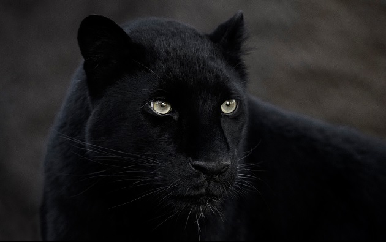
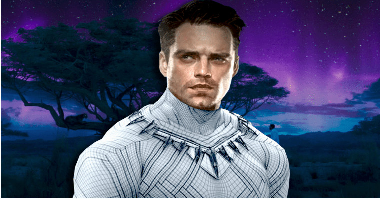
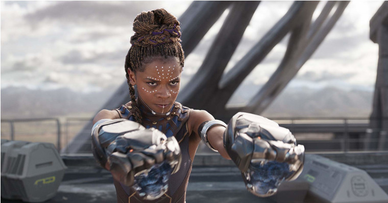
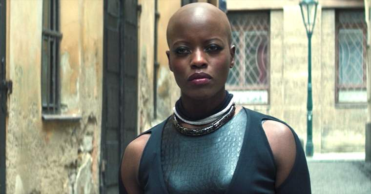

Cultos de Wacanda



Lobo Branco, originalmente conhecido como James "Bucky" Barnes Jr, deixou a identidade de Soldado invernal e foi acolhido por Wacanda sendo reconhecido como parte do povo.
Shuri é a princesa de Wacanda, irmã de T'Chala, cientista tecnologica do reino, uma excelente lutadora marcial e quando T'Chala morre só ela é capaz de assumir o legado de Pantera Negra.
Ayo, Dora Milaje é uma guerreira de elite de Wacanda, sua lealdade ao reino é induvidavel. Ela contrubuiu bastante para a recuperação de Bucky e deu-lhe o nome de Lobo Branco.
